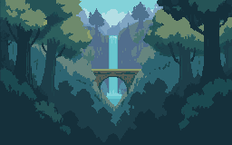
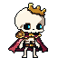
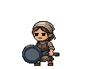

Magical Forest · Stage 1 foundation
REVIEW CANDIDATE · 15 modular assets · 1 PixelLab call / 9 generations · Unity + native QA passed
Quiet forest depth, separate trunks and a flat standing lane. The approved cast is unchanged. This is an isolated Unity art scene; the playable zone and shared HUD remain unchanged.
Actual Unity Game View. Separate captures verified at 360×240, 720×480 and 1080×720. These figure placements are native-scale probes, not a redesign of the playable layout.
Preserved
Current Dungeon and Forest production art, characters,
gems, shared HUD/buttons and all existing scenes.
954 protected files verified unchanged.
Checks
Binary alpha · padded contours · seamless ground joins
Equal foot baseline · full background coverage
LibreSprite reopen equality · exact integer pixel scale
Native modules
The zoom buttons affect only display size. These are individual sprites, not slices from a flattened finished scene.
Far_CanopyRepeat
48×24 · 2 colors · binary alpha
Quiet opaque extension behind top controls; repeat connections intentional.Canopy_FringeRepeat
60×40 · 2 colors · binary alpha
Stepped canopy overlap hides the straight boundary of the distant scenery layer.Far_SideExtension
52×160 · 3 colors · binary alpha
Separate quiet side-depth sprite; covered joins under foreground trunks.Understory_Repeat
48×16 · 3 colors · binary alpha
Low contrast distant bank; horizontal repeat.Ground_TopA
60×16 · 6 colors · binary alpha
Flat 60x16 repeat; continuous horizontal standing lane at local y=10.Ground_FaceA
60×24 · 5 colors · binary alpha
Separate soil/root fascia; top and side joins fixed.Ground_TopB
60×16 · 6 colors · binary alpha
Flat 60x16 repeat; continuous horizontal standing lane at local y=10.Ground_FaceB
60×24 · 5 colors · binary alpha
Separate soil/root fascia; top and side joins fixed.Tree_Left
72×216 · 7 colors · binary alpha
Native left foreground trunk; full branch and root silhouette within padded canvas.Tree_Right
64×216 · 7 colors · binary alpha
Independently shaped right foreground trunk; top-left lighting preserved.Canopy_Left
96×44 · 4 colors · binary alpha
Separate foliage roof mass; all leaves in frame, coarse connected clusters.Canopy_Right
96×44 · 4 colors · binary alpha
Separate foliage roof mass; all leaves in frame, coarse connected clusters.Support_Left
28×24 · 4 colors · binary alpha
Simple wood hook/anchor context; lantern asset deferred to Stage 4.Support_Right
28×24 · 4 colors · binary alpha
Simple wood hook/anchor context; lantern asset deferred to Stage 4.Far_Forest
256×160 · 9 colors · binary alpha
PixelLab far-depth source; deliberate value/palette consolidation, geometry preserved at 256x160.Distant layer: raw → cleaned
PixelLab source: 24 colors. LibreSprite output: 9 depth tones. Same 256×160 native geometry.
Raw PixelLab

Golden rendering references
Rattlebones · primary

Farmer

Pan Villager

Next review points
- Portrait/board frames and final HUD overlap belong to later stages.
- Lanterns, vines and restrained magical accents are deferred to the props stage.
- Phone safe-area and live gameplay placement need later integration tests.
Stopped after Stage 1. Nothing merged. Stage 2 awaits your approval.
Full report · Validation evidence · Actual 3× Unity capture